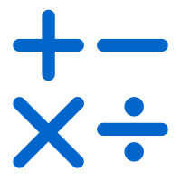
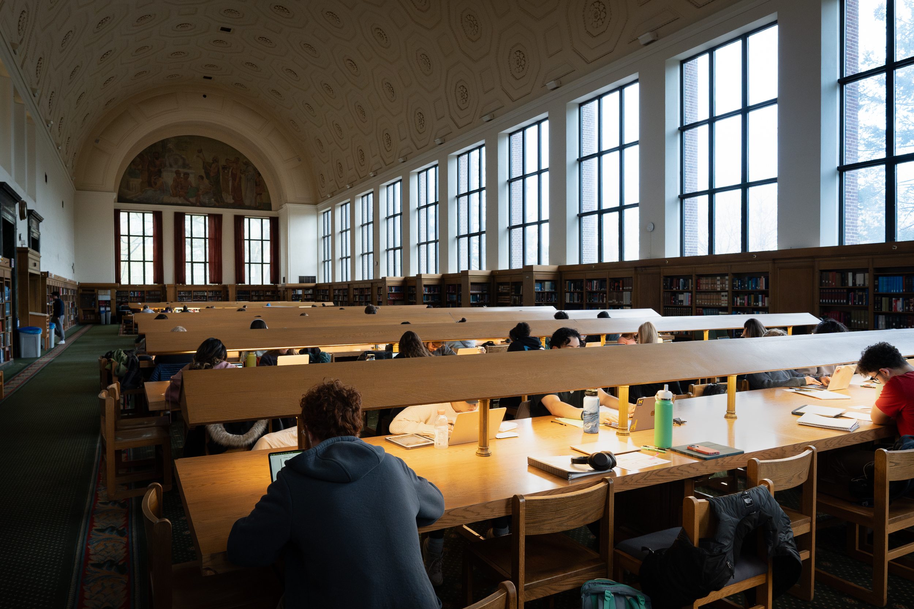

Resources
UMSI offers a variety of resources tailored to help students with their academic coursework. Here is a snapshot of just a couple of resources offered for students:
- UMSI Peer Tutoring: Receive academic support and help from peers.
- Programming Peer Tutoring: Get help specifically with programming classes.
- Math Peer Tutoring: For math-related questions, seek peer tutoring for your math courses.
- Peer-to-Peer Tutor Directory: Utilize this directory for direct access to peer tutors.
Additional Academic Support Resources:
Have further questions? Find other academic support resources that fit your needs.
Learn more about UMSI Tutoring & Academic Support!
UMSI Peer Tutoring Program
In partnership with the UMSI faculty, the UMSI Peer Tutoring program is an opportunity for UMSI students and students taking UMSI courses to engage with peer tutors and receive assistance and support in UMSI courses.
For more information, send an email!
Programming Peer Tutoring
For graduate students enrolled in a programming course, office hourse are a great resource to tap into. However, apart from course-related office hourses, peer tutors are available to answer questions for the courses listed below.
Tutors are also available to help with general python support. This may include general questions related to programming, installations, VS Code, or more!
Tutors are available for the grad courses:
- SI 506 Programming 1
- SI 507 Intermediate Programming
UMSI Math Tutoring
For students enrolled in math courses, tutors are available to assist with coursework for the topics listed below. For additional help or other questions related to math, tutors are more than willing to help with general math support.
Tutors are available for:
- Linear Algebra
- Statistics
- General Math Support
- SIADS 502 Math Methods 1
Additional Academic Support
If you need further support or help with subjects such as writing, English, math, or have a disability, the UMSI Tutoring website has more information.